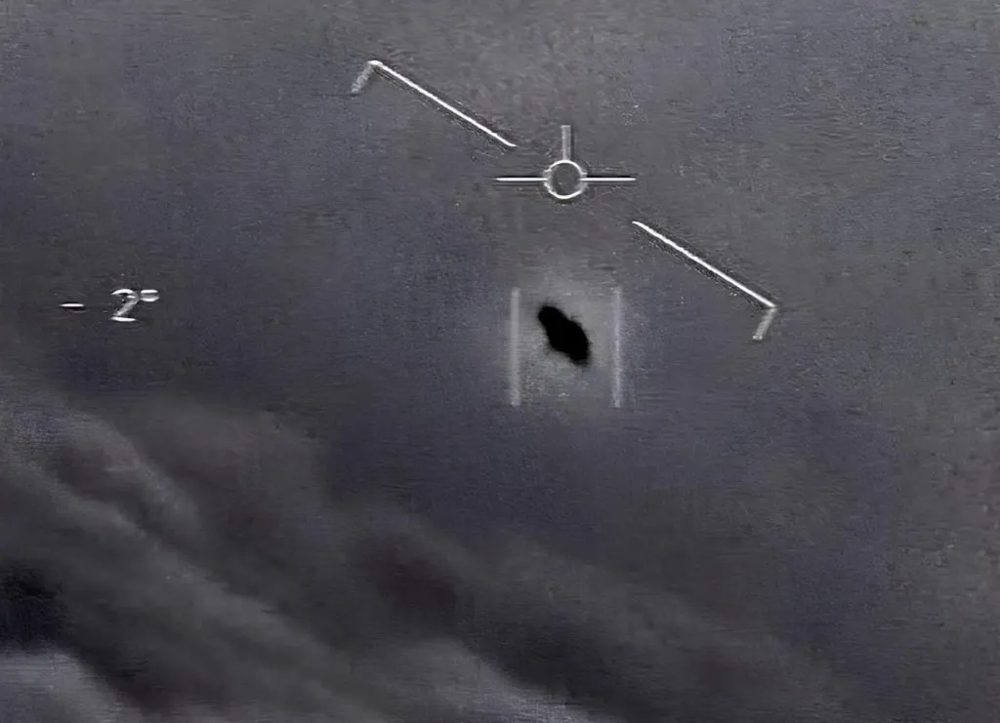

CIENCIA · 7 DE AGOSTO
Nuevos documentos oficiales sobre fenómenos OVNI
La quinta entrega de expedientes estadounidenses reúne memorandos, notas y dibujos. ¿Qué conocemos realmente de estos documentos?
Leer noticia →